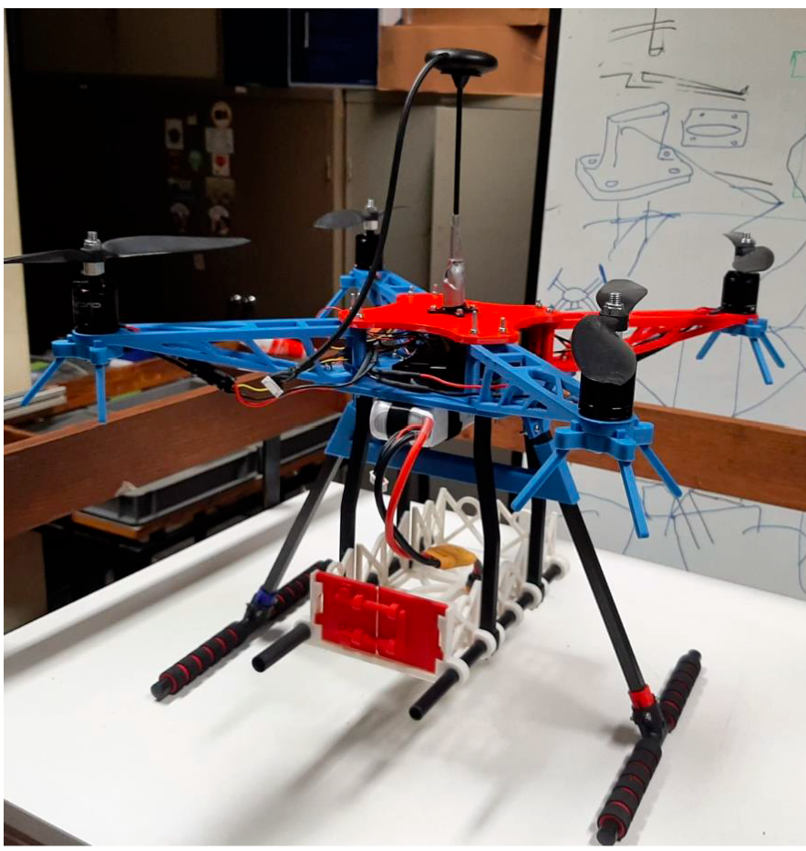
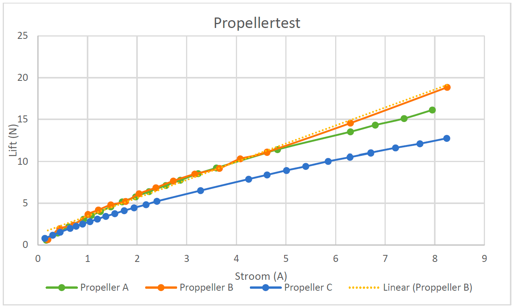
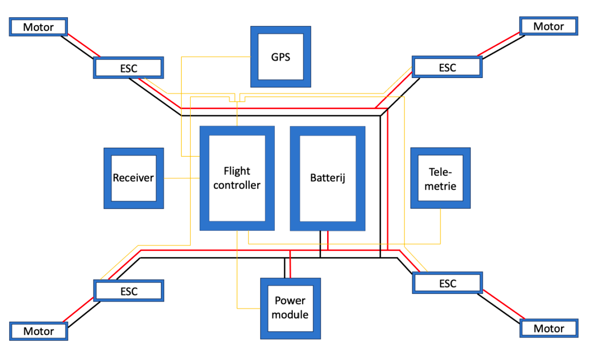
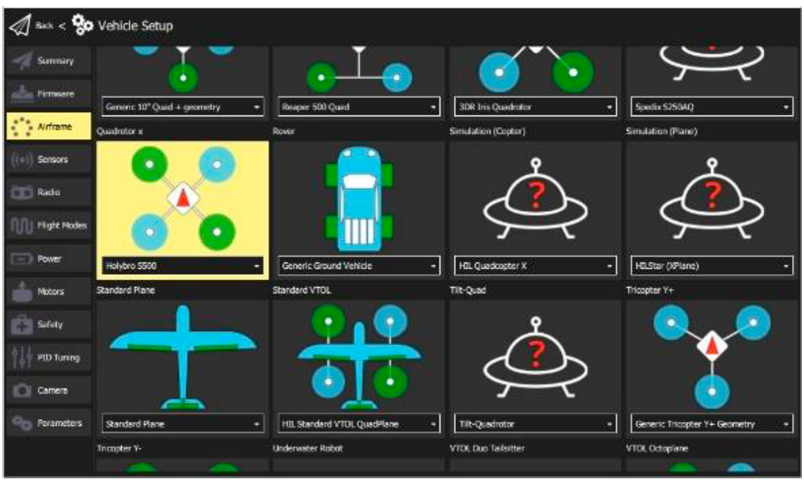
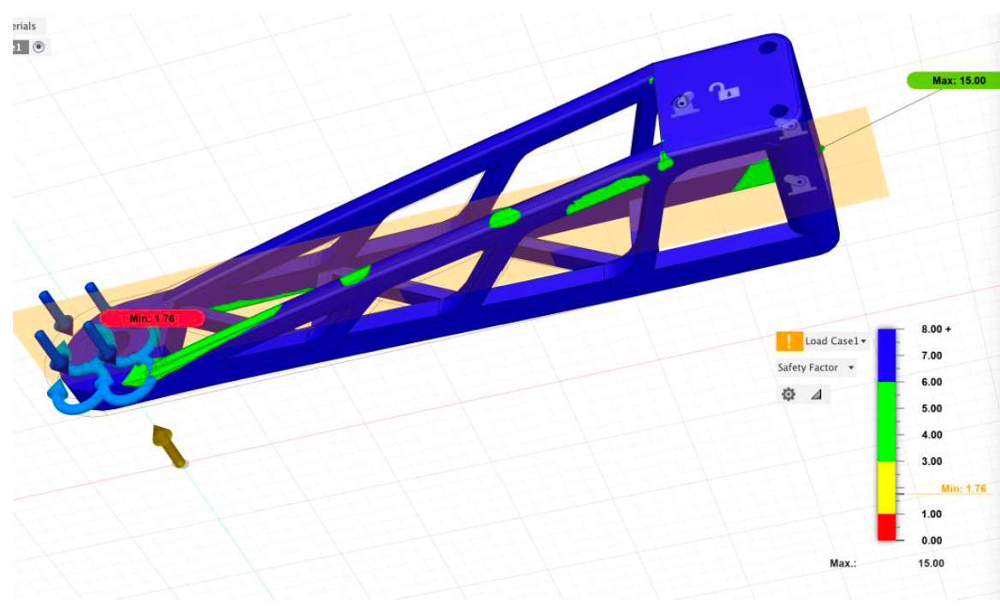
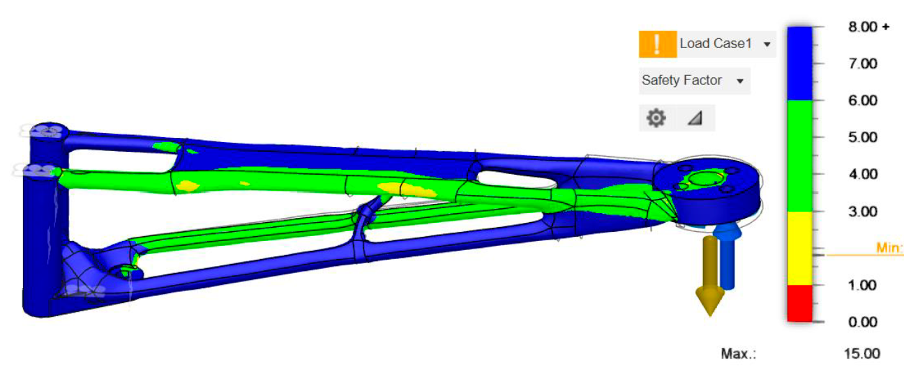
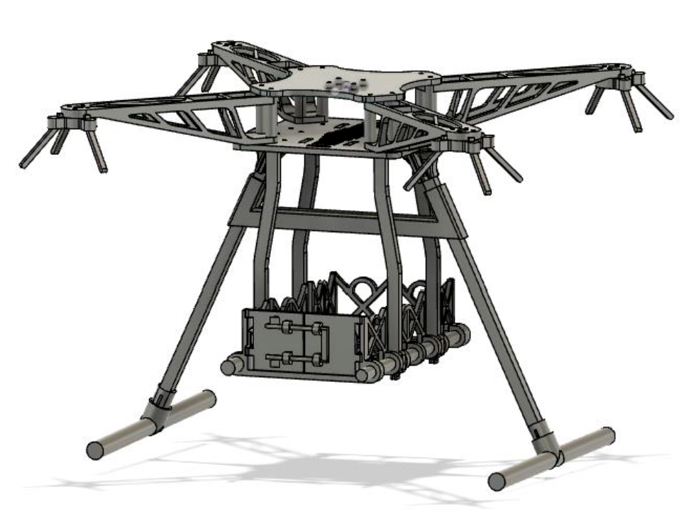

Autonomous drone project VUB

Introduction
In our second year, we had to complete four different group projects related to various fields of engineering. All of them are presented and explained on the following website. On this page, I will describe our approach to building an autonomous drone to carry vaccines to several hospitals in Brussels, near the VUB. This project is therefore associated with the field of mechanical and electrical engineering. This project was carried out over 6 days spread across 6 weeks with a team of 8 engineering students.
To build this drone, several problems had to be solved. We received several propellers from the assistants, so our first task was to determine how much lift each propeller could produce based on the tension and current, in order to identify the most suitable one for our drone. Therefore, we tested the lift-to-current ratio, which can be seen in the following figure.
To build this drone, several problems had to be solved. We received several propellers from the assistants, so our first task was to determine how much lift each propeller could produce based on the tension and current, in order to identify the most suitable one for our drone. Therefore, we tested the lift-to-current ratio, which can be seen in the following figure.

electronics
This plot helped us determine which propeller was the best, considering other factors like its length and weight.
The next significant aspect of the drone was to address all the electronics needed for flight. Due to the complexity of using four motors to fly, it is essential to use a flight controller. This device translates commands, such as "go left", from the controller into the correct PWM values for each motor. Besides the flight controller, the electronic components also include the receiver paired with the controller, a GPS module primarily used for autonomous flight, and a telemetry module to send flight data to a computer for analysis and communication during autonomous flight. Additionally, we used four ESCs and motors, along with a battery, to run everything properly.
The next significant aspect of the drone was to address all the electronics needed for flight. Due to the complexity of using four motors to fly, it is essential to use a flight controller. This device translates commands, such as "go left", from the controller into the correct PWM values for each motor. Besides the flight controller, the electronic components also include the receiver paired with the controller, a GPS module primarily used for autonomous flight, and a telemetry module to send flight data to a computer for analysis and communication during autonomous flight. Additionally, we used four ESCs and motors, along with a battery, to run everything properly.

To program the flight controller, we used QGroundControl, a powerful tool capable of performing many functions. The problem is that it operates like a big black box. It would have been more enjoyable if we could have programmed it using an Arduino or built our own basic flight controller (which I might do in another project). In QGroundControl, we can calibrate and tune all the commands and settings for the motors, radio, sensors, and other components. As you can see in the image, it is also possible to configure planes, cars, helicopters, and other remote-controlled vehicles. It was quite interesting to get hands-on experience with it.

Frame design

Another aspect of this project was designing the drone's frame. It was first designed in Fusion 360 before being printed using the 3D printers at VUB. To achieve the best design, we had to minimize the amount of PLA used while ensuring the frame was stiff enough to withstand all the forces. To do this, we used the stress analysis function in Fusion 360. Several prototypes were made, as shown in the following pictures. Another important feature is that, based on some dimensions and the forces and moments the object will endure, it is possible to let Fusion generate the best possible part.

In the end, our design looked like this. We added a basket underneath to carry the vaccines, as this was our primary objective.

flight test and conclusion
After assembling and printing all the parts, we achieved the desire result. We conducted several test flights and had opportunities to make some improvements. On the final day, we went to an aeroclub to test our autonomous drone in real safe conditions. It worked quite well but crashed after a few takeoffs. From the log files, we couldn’t determine exactly what caused the drone to crash. Overall, we were quite happy with our experience. Like our other projects, this one gave us many opportunities to improve our knowledge and problem-solving skills.